Operators and math reference
Drafted with AI, not yet reviewed
fidget adds these to Rhai, and keycap the number forms of fidget’s functions and the tree forms of Rhai’s. Most work on both numbers and trees, and return a tree when an argument is a tree; see Numbers and trees. Signatures and their types are explained in Concepts.
Coordinates and constants
- math · fidget#
x: Tree The X coordinate, as a tree: what every shape is built from.
Arithmetic and functions on
x,yandzbuild a tree instead of computing a number. The tree is evaluated later, at every point the preview or the export asks about. A shape is such a tree, below 0 inside and above 0 outside.x,yandzare defined everywhere, inside functions too. A variable of the same name hides one.See alsoy,z,axes,remap.Example A circle of radius 10, written as its distance from the origin minus 10.
sqrt(x * x + y * y) - 10
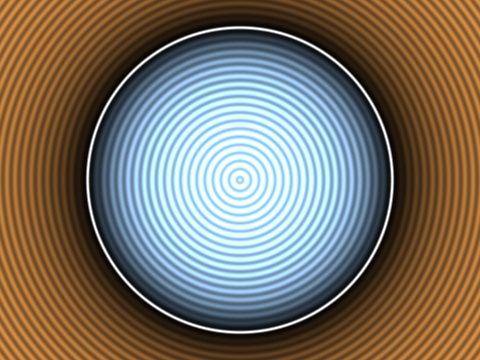
- math · fidget#
y: Tree The Y coordinate, as a tree.
See alsox,z.- math · fidget#
z: Tree The Z coordinate, as a tree.
A shape whose tree has no
zis the same at every height. The preview shows such a shape as 2D, in the XY plane.See alsox,y.Example A sphere cut flat at z = 4, its field the larger of the sphere’s and the height above the cut.
max(sphere(10), z - 4)
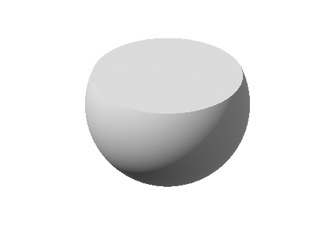
- math · fidget#
axes(): #{ x: Tree, y: Tree, z: Tree } The three coordinates in a map.
The map’s
x,yandzare the same trees as the variablesx,yandz. They stay at hand in a script that uses those names for numbers.See alsox.Example A sphere of radius
x, cut at half its height, wherexis a number.let x = 12; let p = axes(); max(sphere(x), p.z - x / 2)
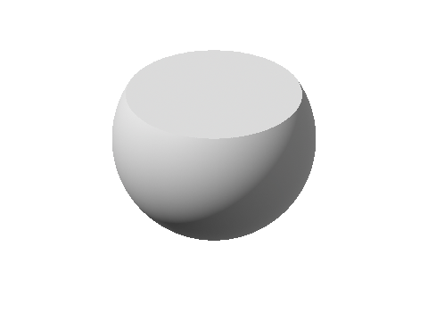
- math · fidget#
PI: numberTAU: numberE: numberPHI: numberGOLDEN_RATIO: numberSQRT_2: numberFRAC_1_SQRT_2: numberFRAC_PI_2: numberFRAC_PI_3: numberFRAC_PI_4: numberFRAC_PI_6: numberFRAC_PI_8: numberFRAC_1_PI: numberFRAC_2_PI: numberFRAC_2_SQRT_PI: numberLN_2: numberLN_10: numberLOG2_E: numberLOG10_E: number fidget’s mathematical constants.
PI- π, 3.14159…, half a turn in radians
TAU- τ = 2π, 6.28318…, a full turn in radians
E- Euler’s number e, 2.71828…
PHI,GOLDEN_RATIO- the golden ratio φ, 1.61803…
SQRT_2- √2, 1.41421…
FRAC_1_SQRT_2- 1/√2, 0.70710…
FRAC_PI_2,FRAC_PI_3,FRAC_PI_4,FRAC_PI_6,FRAC_PI_8- π/2, π/3, π/4, π/6 and π/8; 90, 60, 45, 30 and 22.5 degrees in radians
FRAC_1_PI- 1/π, 0.31830…
FRAC_2_PI- 2/π, 0.63661…
FRAC_2_SQRT_PI- 2/√π, 1.12837…
LN_2- the natural logarithm of 2, 0.69314…
LN_10- the natural logarithm of 10, 2.30258…
LOG2_E- the logarithm of e to base 2, 1.44269…
LOG10_E- the logarithm of e to base 10, 0.43429…
In the names,
SQRTis a square root,FRAC_a_bthe fraction a/b,LNa natural logarithm, andLOG2andLOG10logarithms to base 2 and 10. They are Rust’s 64-bit constants of the same names.fidget’s transforms take angles in degrees, but its trigonometric functions take radians. A variable of the same name hides a constant.
Notes- There is no
SQRT_3, although fidget’s own documentation lists it.sqrt(3.0)is the same number.
See alsosin,atan2,sind.Example The sine of 30 degrees, the angle turned into radians first.
sin(30.0 * PI / 180.0)
0.49999999999999994
Arithmetic
- math · fidget#
a + b: Treea + b: Vec2 | Vec3 The sum of two numbers, trees or vectors.
a,b- numbers or trees, or a vector and a vector or number
With a tree on either side, the sum is a tree. Two numbers add as Rhai adds them. Vectors add component by component, and a number adds to every component.
Adding a number to a shape’s field shrinks the shape by that much, and subtracting one grows it.
Notes- Field: a distance stays a distance when a number is added.
See also-,offset.Example A square shrunk by 2 on every side, the number added to its field.
rect(20) + 2
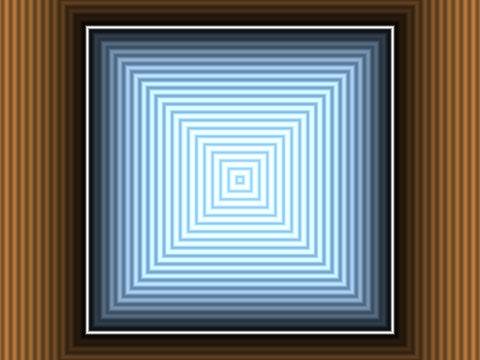
- math · fidget#
a - b: Tree-a: Treea - b: Vec2 | Vec3-a: Vec2 | Vec3 The difference of two numbers, trees or vectors, or the negation of one.
a,b- numbers or trees, or a vector and a vector or number
With a tree on either side, the result is a tree. Vectors subtract component by component.
Negating a shape’s field swaps its inside and outside. So
max(a, -b)isawithbcut away.Notes- Field: a negated distance is a distance.
See also+,inverse,difference.Example A square plate with a round hole, the hole’s field negated.
max(rect(30), -circle(8))
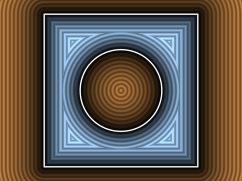
- math · fidget#
a * b: Treea * b: Vec2 | Vec3 The product of two numbers, trees or vectors.
a,b- numbers or trees, or a vector and a vector or number
With a tree on either side, the product is a tree. Vectors multiply component by component, and a number scales every component.
A shape’s field times a positive number has the same surface.
Notes- Field:
ktimes the shape’s, so steepkfor a factorkabove 1, and a bound below 1.
See alsoscale_exact,remap.Example An ellipse, from a circle whose X is multiplied by 2.
circle(10).remap(x * 2, y, z)
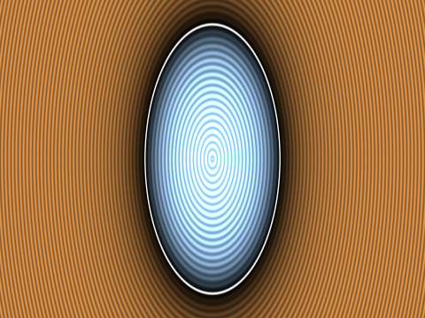
- math · fidget#
a / b: Treea / b: Vec2 | Vec3 The quotient of two numbers, trees or vectors.
a,b- numbers or trees, or a vector and a vector or number
With a tree on either side, the quotient is a tree. Vectors divide component by component.
Between two integers it is Rhai’s integer division, which drops the fraction. Write one of them with a decimal point when the fraction matters.
Example Two integers divided, the fraction dropped.
7 / 2
3Example The same with a decimal point.
7.0 / 2
3.5- math · fidget#
a % b: Tree The remainder of
adivided byb.a,b- numbers or trees
With a tree on either side, it is the Euclidean remainder: from 0 up to
b, for a negativeatoo. Between two numbers, it is Rhai’s remainder, which has the sign ofa;modis Euclidean for both.A remainder of a coordinate repeats space: every cell
bwide maps onto the first one. A shape evaluated at such a coordinate repeats without end.Notes- Field: the shape’s, as long as the shape stays inside its cell with some margin.
See alsomod,repeat_x,repeat,repeat_grid.References- Euclidean division, Wikipedia
- Inigo Quilez, Domain repetition
Example A row of spheres 10 apart, its X folded into cells from -5 to 5, cut to a length.
let cells = sphere(3).remap((x + 5) % 10 - 5, y, z); max(cells, abs(x) - 30)
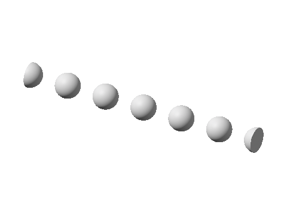
- math · keycap#
a ** n: Tree ato the powern.a,n- numbers or trees
With a tree on either side, the power is a tree, as
powdescribes. Between two numbers it is Rhai’s own: between two integers an integer, and a negativenis an error.See alsopow,square.Example A solid paraboloid 10 high, its top 40 across.
let bowl = (x ** 2 + y ** 2) / 40 - z; max(bowl, z - 10)
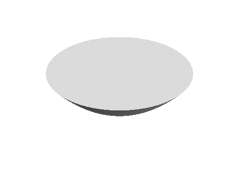
Comparison and selection
- math · fidget#
min(a: Tree, b: Tree): Treemin(a: Vec2, b: Vec2): Vec2min(a: Vec3, b: Vec3): Vec3 The smaller of two values at every point: for shapes, their union.
a,b- numbers or trees, or vectors
Of two numbers, it is Rhai’s own
min, a number. Of two vectors, it is taken component by component; a number with a vector stands for a vector of that number. It takes exactly two values;uniontakes more.Notes- Field: exact outside both shapes, a bound inside where they overlap.
- NaN (not a number) on either side gives NaN.
See alsomax,union,union_round.Example Two circles joined.
min(circle(10), circle([12, 0], 6))
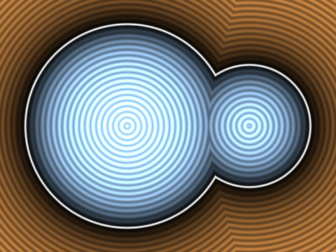
- math · fidget#
max(a: Tree, b: Tree): Treemax(a: Vec2, b: Vec2): Vec2max(a: Vec3, b: Vec3): Vec3 The larger of two values at every point: for shapes, their intersection.
a,b- numbers or trees, or vectors
Of two numbers, it is Rhai’s own
max, a number. Of two vectors, it is taken component by component; a number with a vector stands for a vector of that number. It takes exactly two values;intersectiontakes more.max(a, -b)isawithbcut away.max(s, z - h)is the part ofsbelow the plane z =h.Notes- Field: exact inside, a bound outside near the edges where the two surfaces meet.
- NaN (not a number) on either side gives NaN.
See alsomin,intersection,difference,intersection_round.Example A lens, where two circles overlap.
max( circle([-6, 0], 10), circle([6, 0], 10) )
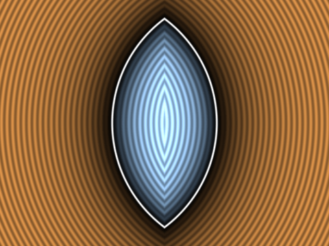
- math · fidget#
compare(a: Tree, b: Tree): Tree The sign of
a - bat every point: -1 whereais smaller, 0 where they are equal, 1 whereais larger.a,b- trees, or a tree and a number
It stands in for
<and its kin, which cannot compare trees. Arithmetic on its result chooses between values, such as a height that depends on the side of a plane.At least one of
aandbmust be a tree: of two numbers it is an error,Function not found.Notes- NaN (not a number) on either side gives NaN.
- Its gradient is 0 everywhere, so it adds nothing to a shape’s normals.
See alsoand,or,not,<.Example A block 4 high left of x = 0 and 8 high right of it.
let block = cuboid([40, 20, 12], #{anchor: "bottom"}); max(block, z - (6 + 2 * compare(x, 0)))
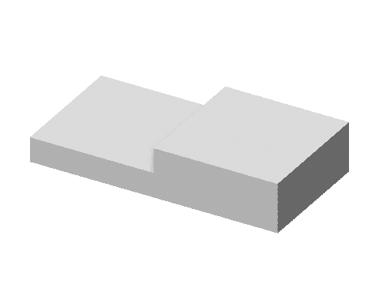
- math · fidget#
and(a: Tree, b: Tree): Tree Logical and on 0 and non-zero:
bwhereais non-zero, 0 whereais 0.a,b- trees, or a tree and a number
The result is
bitself, not 1, so it carries a value where a condition holds. Where both are 0 or 1, it is their product.At least one of
aandbmust be a tree: of two numbers it is an error,Function not found.See alsoor,not,compare.Example A block 3 high, raised by 5 right of x = 0.
let block = cuboid([40, 20, 12], #{anchor: "bottom"}); max(block, z - (3 + and(compare(x, 0) + 1, 5)))
- math · fidget#
or(a: Tree, b: Tree): Tree Logical or on 0 and non-zero:
awhere it is non-zero,bwhereais 0.a,b- trees, or a tree and a number
The result is a value, not 1:
bfills in whereais 0.At least one of
aandbmust be a tree: of two numbers it is an error,Function not found.See alsoand,not,compare.- math · fidget#
not(a: Tree): Tree Logical not: 1 where
ais 0, and 0 elsewhere, NaN (not a number) included.a- a tree or a number
It is a tree even of a number. On a Rhai boolean,
!is the logical not.With
compare, it tests an order:not(compare(a, b) + 1)is 1 whereais smaller thanb, and 0 elsewhere.See alsoand,or,compare.- math · fidget#
a < b: boola <= b: boola > b: boola >= b: boola == b: boola != b: bool Comparisons of numbers, which fail on trees.
a,b- numbers
On a tree, each raises “cannot compare Tree types during function tracing”.
A script runs once and builds a tree, and the tree is evaluated later, at every point. So a script cannot branch on a tree’s value with
if: while it runs, the tree has no value yet.min,max,compare,and,orandnotbuild the choice into the tree instead.max(a, b)stands forif a > b { a } else { b }.See alsomin,max,compare.
Math functions
Every math function, here and among the prelude’s Math helpers, takes numbers and trees alike: of numbers it gives a number, and of a tree a tree.
- Angles are in radians:
sin,atan2and the others; the prelude’ssind,atan2dand the others take degrees, andto_degreesandto_radiansconvert. %has the sign ofabetween numbers, and is never negative on trees;modis never negative on either.powand**take any base with a whole exponent, and a base above 0 with any other; at 0 and below, a tree’s power is then 0, and a number’s below 0 NaN.logis to base 10, as Rhai has it;lnis the natural logarithm.- Where a function is undefined, as
sqrtandlnare below 0, its interval is NaN, and so is that of a division by an interval that holds 0; the preview then cannot skip such regions as empty.
fidget’s functions take trees, Rhai’s take numbers, and keycap adds what either lacks; a .fidget script has only theirs.
- math · fidget#
abs(a: Tree): Treeabs(a: Vec2): Vec2abs(a: Vec3): Vec3 The absolute value.
a- a number, a tree or a vector
Of a number, it is Rhai’s own
abs, a number. Of a vector, it is taken component by component.On a coordinate, it mirrors: a shape evaluated at
abs(x)has its +X half copied onto -X. On a shape’s field, it gives a shell of no thickness around the surface, which a number subtracted makes thick.Notes- Field:
absof a distance is a distance.
See alsosymmetric_x,shell.Example A ring 1 wide, the shell of a circle.
abs(circle(10)) - 0.5
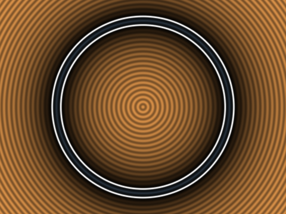
- math · keycap#
sign(a: Tree): Tree The sign of
a: -1 where it is below 0, 0 where it is 0, and 1 where it is above.a- a number or a tree
Of a number, it is Rhai’s own
sign, an integer. On a tree, it iscompare(a, 0), whose gradient is 0.Notes- NaN (not a number) gives NaN on a tree, and is an error in Rhai’s
sign.
See alsoabs,compare,step.Example A plate whose top edge steps up and down by 3, with the sign of a wave.
rect([60, 20]).intersection(y - 3 * sign(sin(x / 3)))
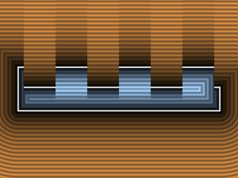
- math · fidget#
sqrt(a: Tree): Treesqrt(a: Vec2): Vec2sqrt(a: Vec3): Vec3 The square root.
a- a number, a tree or a vector
Of a vector, it is taken component by component.
Notes- NaN (not a number) below 0.
See alsosquare,cbrt,pow,hypot.Example A sphere of radius 10, written as its distance from the origin minus 10.
sqrt(x * x + y * y + z * z) - 10

- math · keycap#
cbrt(a: Tree): Tree The cube root: the number whose cube is
a.a- a number or a tree
Unlike
a ** (1.0 / 3), it takes a negativea:cbrt(-8)is -2.Notes- On a tree, it is the sign of
atimesexp(ln(abs(a)) / 3), and its gradient is 0 whereais 0.
See alsosqrt,pow.Example The side of a cube of 1000 cubic mm.
cbrt(1000)
10.0- math · fidget#
square(a: Tree): Tree atimes itself.a- a number or a tree
See alsosqrt,pow.Example An ellipse 40 by 20, from its implicit equation.
square(x / 20) + square(y / 10) - 1
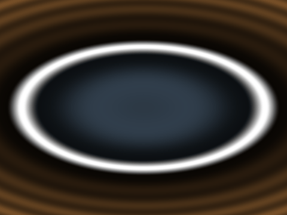
- math · keycap#
pow(a: Tree, n: Tree): Tree ato the powern, the same asa ** n.a- the base, a number or a tree
n- the exponent, a number or a tree
Of two numbers, it is Rhai’s
**: of two integers an integer, and a negativenis then an error, so write2.0 ** -1. On a tree, a wholenmultipliesaby itself, by repeated squaring, and takes anya:x ** 2issquare(x), andx ** -1is1 / x. Any othern, or one that is a tree, givesexp(n * ln(a)), which takes anaabove 0: whereais 0 or less, the power of a tree is 0, and that of a number below 0 is NaN (not a number).Notes- A negative
ndivides bya: where an interval ofaholds 0, that of the power is NaN, and the preview cannot skip the region. - An odd
nisatimes an even power of it, whose interval is wider than the power’s across 0.
See alsosquare,sqrt,cbrt,exp,ease_in_pow.ReferencesExample A squircle 40 across, from its implicit equation.
(x / 20) ** 4 + (y / 20) ** 4 - 1
- math · fidget#
sin(a: Tree): Tree The sine of an angle in radians.
a- the angle, a number or a tree
See alsocos,tan,asin,sind,PI.Example A plate with a wavy edge.
let wave = y - 6 - 2 * sin(x / 3); max(rect([60, 20]), wave)
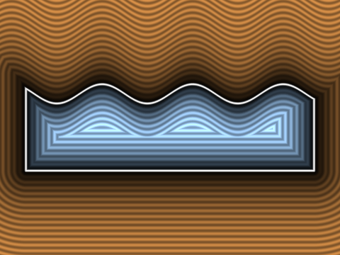
Example The graph of
sin, inside below the curvey - 8 * sin(x / 4)
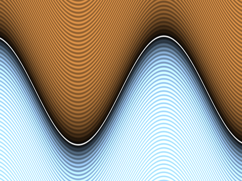
- math · fidget#
cos(a: Tree): Tree The cosine of an angle in radians.
a- the angle, a number or a tree
See alsosin,tan,acos,cosd,PI.- math · fidget#
tan(a: Tree): Tree The tangent of an angle in radians.
a- the angle, a number or a tree
See alsosin,cos,atan,tand,PI.- math · fidget#
asin(a: Tree): Tree The arcsine: the angle whose sine is
a, in radians from -π/2 to π/2.a- a number or a tree, from -1 to 1
Notes- NaN (not a number) outside -1 to 1.
See alsosin,acos,atan,asind.- math · fidget#
acos(a: Tree): Tree The arccosine: the angle whose cosine is
a, in radians from 0 to π.a- a number or a tree, from -1 to 1
Notes- NaN (not a number) outside -1 to 1.
See alsocos,asin,atan,acosd.- math · fidget#
atan(a: Tree): Treeatan(y: Tree, x: Tree): Tree The arctangent: the angle whose tangent is
a, in radians from -π/2 to π/2.a- a number or a tree
For the angle of a point, all the way round,
atan2(y, x)takes both coordinates;atan(y, x)is the same, as Rhai has it.See alsotan,atan2,atand.- math · fidget#
atan2(y: Tree, x: Tree): Tree The two-argument arctangent: the angle of the point (
x,y) from +X, in radians from -π to π.y,x- the point’s coordinates,
yfirst
The angle jumps from π to -π across -X.
See alsoatan,atan2d,repeat_polar.ReferencesExample A round ramp that climbs from 0 to 10 high once around Z, with a step on -X.
let disc = max(circle(20), -z); max(disc, z - (5 + 5 * atan2(y, x) / PI))
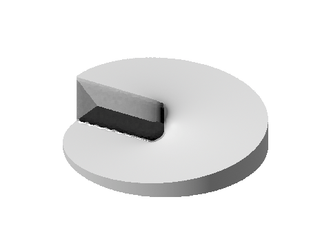
- math · keycap#
sinh(a: Tree): Tree The hyperbolic sine:
(exp(a) - exp(-a)) / 2.a- a number or a tree
See alsocosh,tanh,exp.- math · keycap#
cosh(a: Tree): Tree The hyperbolic cosine:
(exp(a) + exp(-a)) / 2, 1 at 0 and rising on either side.a- a number or a tree
c * cosh(x / c)is a catenary, the curve of a hanging chain.See alsosinh,tanh,exp.ReferencesExample A plate with a catenary arch cut through it.
let arch = y - 30 + 10 * cosh(x / 10); rect([60, 30], #{anchor: "front"}).difference(arch)
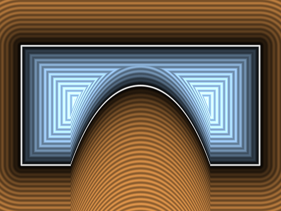
- math · keycap#
tanh(a: Tree): Tree The hyperbolic tangent: from -1 to 1, 0 at 0, with a slope of 1 there.
a- a number or a tree
k * tanh(a / k)followsanear 0 and levels off at -kandk: a smoothclamp.See alsoclamp,sinh,cosh.Example A plate whose top edge rises with x near 0 and levels off 5 above and below.
rect([60, 30]).intersection(y - 5 * tanh(x / 5))
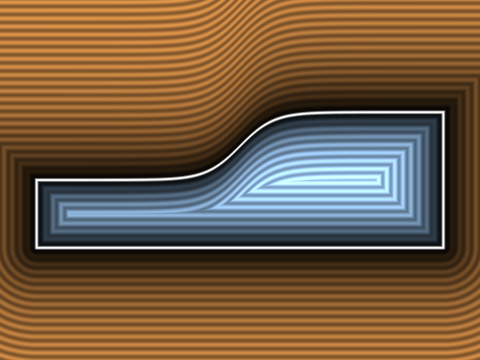
- math · keycap#
to_degrees(a: Tree): Tree An angle in radians, in degrees:
a * 180 / PI.a- the angle, in radians, a number or a tree
See alsoto_radians,atan2d.Example Each point’s angle about the Z axis, from -180 to 180 degrees, as
atan2d(y, x)gives it.to_degrees(atan2(y, x))
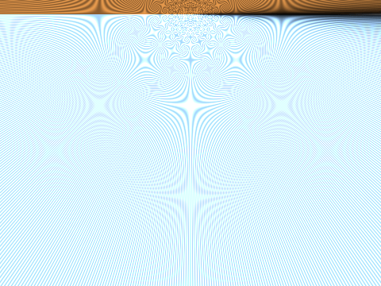
- math · keycap#
to_radians(a: Tree): Tree An angle in degrees, in radians:
a * PI / 180.a- the angle, in degrees, a number or a tree
fidget’s
sin,cosandtantake radians; the prelude’ssind,cosdandtandtake degrees.See alsoto_degrees,sind.Example A quarter turn, in radians.
to_radians(90)
1.5707963267948966- math · fidget#
exp(a: Tree): Tree The exponential function: e, Euler’s number, to the power
a.a- a number or a tree
See alsoexp2,ln,pow,E.- math · keycap#
exp2(a: Tree): Tree 2 to the power
a.a- a number or a tree
See alsoexp,log2,pow.- math · fidget#
ln(a: Tree): Tree The natural logarithm, to base e.
a- a number or a tree, above 0
Notes- NaN (not a number) below 0, and minus infinity at 0.
See alsoexp,log,log2,log10,LN_2.- math · keycap#
log(a: Tree): Treelog(a: Tree, base: Tree): Tree The logarithm to base 10, or to
base.a- a number or a tree, above 0
base- the base, above 0 and not 1
log(a)islog10(a), as Rhai has it;lnis the natural logarithm.Notes- NaN (not a number) below 0, and minus infinity at 0, as for
ln.
See alsoln,log2,log10.Example How many times 3 goes into 81 as a factor.
log(81, 3)
4.0- math · keycap#
log2(a: Tree): Tree The logarithm to base 2.
a- a number or a tree, above 0
Notes- NaN (not a number) below 0, and minus infinity at 0, as for
ln.
See alsoexp2,log,ln.- math · keycap#
log10(a: Tree): Tree The logarithm to base 10.
a- a number or a tree, above 0
Notes- NaN (not a number) below 0, and minus infinity at 0, as for
ln.
See alsolog,ln.- math · fidget#
floor(a: Tree): Tree The largest integer not above
a.a- a number or a tree
A floor of a coordinate numbers the cells of a grid, for a pattern that changes from cell to cell.
Notes- Field: a step at every integer, so a field with
floorin it is no distance across the steps.
See alsoceil,round,rand.ReferencesExample A staircase, a block whose height steps up by 5 every 8 along X.
let wall = cuboid([40, 10, 40], #{anchor: "bottom"}); max(wall, z - 5 * (floor(x / 8) + 4))
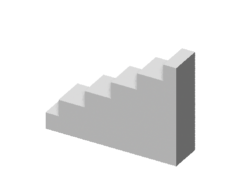
Example The graph of
floor, inside below the curvey - 4 * floor(x / 4)
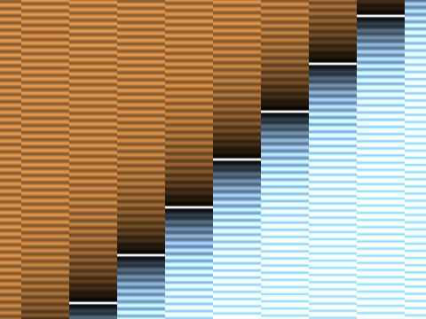
- math · fidget#
ceil(a: Tree): Tree The ceiling: the smallest integer not below
a.a- a number or a tree
Notes- Field: a step at every integer, as for
floor.
See alsofloor,round.ReferencesExample The number of 8 mm cells that covers 30 mm.
ceil(30.0 / 8)
4.0- math · fidget#
round(a: Tree): Tree The nearest integer to
a, halves away from 0.a- a number or a tree
x - s * round(x / s)folds X into cellsswide, centred on the multiples ofs, for a shape repeated along X.Notes- Field: a step halfway between integers, as for
floor.
See alsofloor,ceil,repeat.References- Inigo Quilez, Domain repetition
Example A plate with a row of holes 10 apart.
let strip = rect([70, 12]); let dot = circle(3).remap(x - 10 * round(x / 10), y, z); max(strip, -dot)
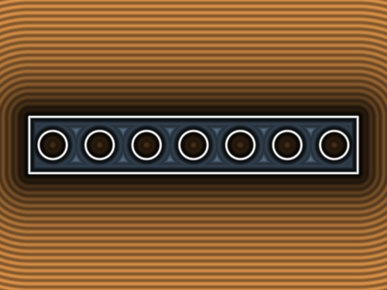
Random numbers
- math · fidget#
rand(seed: Tree): Tree A random number from 0 up to 1, made from
seed.seed- a number or a tree
The number is a hash of the bits of
seed, so the same seed always gives the same number. Seeds that differ by a little give unrelated numbers. A seed that is the same across a cell, such as thefloorof a coordinate, gives each cell its own number.mixmakes one seed of two values.It is a tree even of a number.
See alsomix,floor.Example A 20 mm tile with about half of its 2 mm squares, picked at random.
let noise = rand(mix(floor(x / 2), floor(y / 2))); max(rect(20), noise - 0.5)
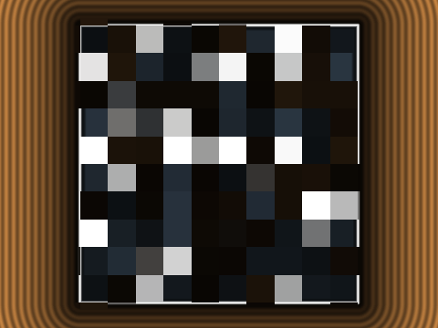
- math · fidget#
mix(a: Tree, b: Tree): Tree One seed for
rand, made by hashing the bits ofaandbtogether.a,b- trees, or a tree and a number
The result is raw bits, any number or NaN (not a number), only good as a seed. It does not blend
aandbas the OpenGL Shading Language’smixdoes; the prelude’slerpdoes that.At least one of
aandbmust be a tree: of two numbers it is an error,Function not found.See alsorand,lerp.Example A block of 10 mm pillars, each of a random height, seeded by its cell in X and Y.
let plate = cuboid([40, 40, 20], #{anchor: "bottom"}); let noise = 10 * rand(mix(floor(x / 10), floor(y / 10))); max(plate, z - 5 - noise)
Remapping
- math · fidget#
remap(shape: Shape, x: Tree, y: Tree, z: Tree): Shaperemap(shape: Shape, x: Tree, y: Tree): Shapeshape.remap(x: Tree, y: Tree, z: Tree): Shapeshape.remap(x: Tree, y: Tree): Shape The shape evaluated at other coordinates:
x,yandzin its tree replaced by the given trees.shape- the shape to transform
x,y,z- the new coordinates, trees of the old ones; without
z, Z stays as it is
Every transform is a remap. The shape moves the opposite way to its coordinates:
s.remap(x - 5, y, z)issmoved 5 along +X.A coordinate may be a number:
s.remap(x, y, 0)is the slice ofsat z = 0, at every Z. In a.fidgetscript it must be a tree, such as0.0 * x.Notes- Field: a distance stays a distance under a rigid motion, a move, turn or mirror; a scale or a bend changes the field’s slope.
See alsomove,rotate,scale,%.Example A bar twisted by a quarter turn over its height.
bounds([-10, -10, -21], [10, 10, 21]); let a = z * PI / 80; let u = x * cos(a) + y * sin(a); let v = y * cos(a) - x * sin(a); cuboid([10, 10, 40]).remap(u, v, z)
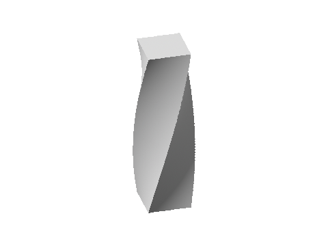
Vectors and axes
- math · fidget#
vec2(x: number, y: number): Vec2vec2(a: number[]): Vec2vec2(v: Vec2): Vec2 A 2D vector, of two 32-bit floats.
x,y- its components
a- an array of exactly two numbers
v- a vector, returned as it is
fidget’s shapes take
[x, y]arrays for their 2D fields, so a script seldom needsvec2. Its components are its properties.xand.y, numbers. A component is set to a float: setting it to an integer is an error.+,-,*and/work component by component, with another vector or with a number for every component.min,max,abs,sqrtand-on one vector work component by component too.Notes- fidget has no dot product, length or normalisation; the prelude’s
dot,normandnormalizetake vectors as well as arrays.
See alsovec3,dot,norm.Example The length of a vector, from the prelude’s
norm.norm(vec2(3, 4))
5.0- math · fidget#
vec3(x: number, y: number, z: number): Vec3vec3(a: number[]): Vec3vec3(v: Vec3): Vec3 A 3D vector, of three 32-bit floats.
x,y,z- its components
a- an array of two or three numbers; without a third, Z is 0
v- a vector, returned as it is
fidget’s shapes take
[x, y, z]arrays for their 3D fields, so a script seldom needsvec3. A 3D field given two numbers takes the third from its default, 0 for a position and 1 for a scale. Its components are its properties.x,.yand.z, numbers, set asvec2’s are. Operators and functions work as they do onvec2.See alsovec2,cross.Example A vector’s components halved, the result a vector.
(vec3(4, 6, 10) / 2).to_string()
"[2, 3, 5]"- math · fidget#
axis(a: string | Tree | Vec3): Axis A direction, of length 1.
a"x","y"or"z", or the treex,yorz, or a vector, which is scaled to length 1
A field of type
Axis, such asrotate’saxis, takes the same values directly.Notes- A vector of length 0, NaN (not a number) or one too long to scale is an error.
See alsorotate,plane.Example A rod turned 45 degrees about the diagonal of the XY plane.
cylinder(2, 20) .rotate(axis([1, 1, 0]), 45)
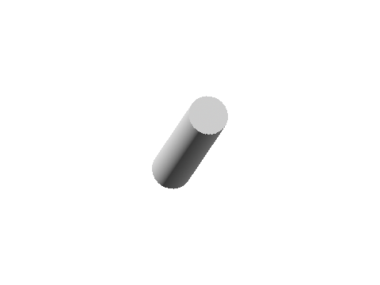
- math · fidget#
to_string(t: Tree): stringto_string(v: Vec2 | Vec3 | Axis | Plane): stringt.to_string(): stringv.to_string(): string A short text for a tree, a vector, an axis or a plane.
t- a tree, written
x,yorzfor a coordinate andTree(..)for any other v- a vector, written as an array, or an axis or plane, written as the call that makes it
printuses it, so printing a tree tells only that it is one.Example A vector, as text.
vec3(1, 2, 3).to_string()
"[1, 2, 3]"
Script API
These come from keycap-server, not from fidget; scripts written for fidget-cli or fidget’s viewer use the same draw and draw_rgb.
A .fidget script has those two only, without draw’s options; see Dialects.
- script · keycap#
draw(shape: Shape | Shape[])draw(shape: Shape | Shape[], opts: #{ role?: string }) Draws
shape, for the preview to show and an export to write.shape- a shape, or an array of shapes, drawn as their union
opts- in a
.keycapscript onlyrole- what a laser does along the outline in a 2D export:
"cut", the default,"score"or"engrave"
A script may draw any number of shapes.
See alsodraw_rgb,bounds.Example A plate with a label engraved on it, for a laser cutter.
let label = text("A1", #{ size: 5, halign: "center", valign: "center", }); draw(rect([30, 12])); draw(label, #{role: "engrave"})
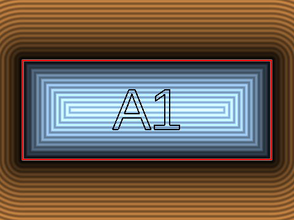
- script · keycap#
draw_rgb(shape: Shape | Shape[], r: number, g: number, b: number) Draws
shapein a colour, given by its red, green and blue.shape- a shape, or an array of shapes, drawn as their union
r,g,b- the colour’s red, green and blue, each from 0 to 1; values outside are clamped
See alsodraw.Example A grey plate with an orange peg.
let plate = cuboid([30, 30, 4], #{anchor: "top"}); let boss = cylinder(4, [0, 10]); draw_rgb(plate, 0.6, 0.6, 0.6); draw_rgb(boss, 1.0, 0.5, 0.0)
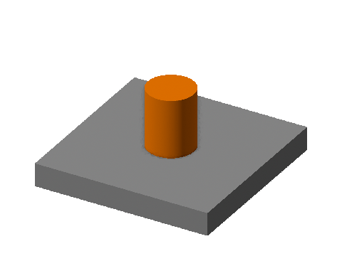
- script · keycap#
bounds(lower: Vec3, upper: Vec3) Sets the region the preview shows and an export writes.
lower,upper[x, y, z], the region’s lowest and highest corners
Without it, the region is fitted to the drawn shapes. A script sets it at most once. A shape whose region cannot be fitted, such as one repeated without end, needs it.
See alsodraw,resolution.Example A plane of spheres repeated without end, cut to a region to look at.
bounds([-20, -20, -5], [20, 20, 5]); sphere(3).remap((x + 5) % 10 - 5, (y + 5) % 10 - 5, z)
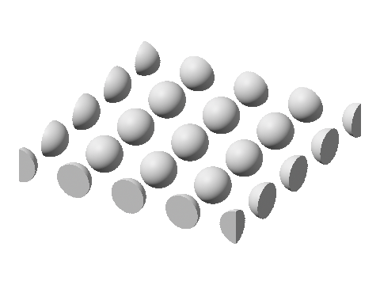
- script · keycap#
resolution(cells: number) Sets the resolution of an export, in mesh cells per unit.
cells- the cells per unit, above 0
See alsobounds.- script · keycap#
text(string: string): Shapetext(string: string,opts: #{ size?: number, font?: string, halign?: string, valign?: string, spacing?: number },): Shape The outline of
stringin the XY plane.string- the text
optssize- about the height of a capital letter above the baseline; 10 by default
font- a font file, relative to the script, or an installed font by its name and style,
"JetBrains Mono:style=Bold"; Liberation Sans by default;"libfive"is libfive’s own font, quicker to render but no exact field halign- the horizontal alignment,
"left"(the default),"center"or"right" valign- the vertical alignment,
"baseline"(the default),"top","center"or"bottom" spacing- a factor on the advance from one letter to the next; 1 by default
Notes- Field: exact, its curves within a thousandth of
size; with"libfive", a bound.
See alsosvg,engrave.From OpenSCADtext()takes the same options, and sizes, spacing and alignment match OpenSCAD 2021.01’s.Example A label raised 0.6 from a plate.
let label = text("M3", #{ size: 6, halign: "center", valign: "center", }); let plate = cuboid([30, 12, 2], #{anchor: "top"}); union(plate, label.extrude([0, 0.6]))
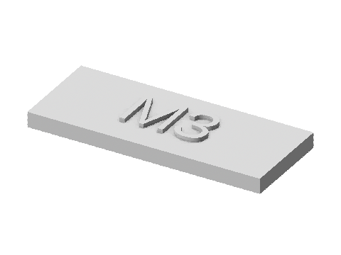
- script · keycap#
svg(path: string): Shapesvg(path: string, opts: #{ center?: bool, id?: string }): Shape The shapes of an SVG (Scalable Vector Graphics) file, in the XY plane.
path- the file, relative to the script
optscenter- put the centre of the shapes’ bounding box at the origin; false by default
id- import only the element with this
id, such as an Inkscape layer
The document’s bottom left corner goes to the origin. Its units become millimetres, at 96 pixels to the inch. Every closed subpath is filled, whatever its paint, by its path’s
fill-rule, even-odd for a path without a fill. An open subpath imports as its stroke. The preview reloads when the file changes.Notes- Field: exact, of the shapes’ union; curves within 0.01 mm.
See alsotext,extrude.ReferencesFrom OpenSCADimport("file.svg")reads the file the same way.
Rhai’s own functions (print, type_of, to_float, string and array methods) are in the Rhai book.